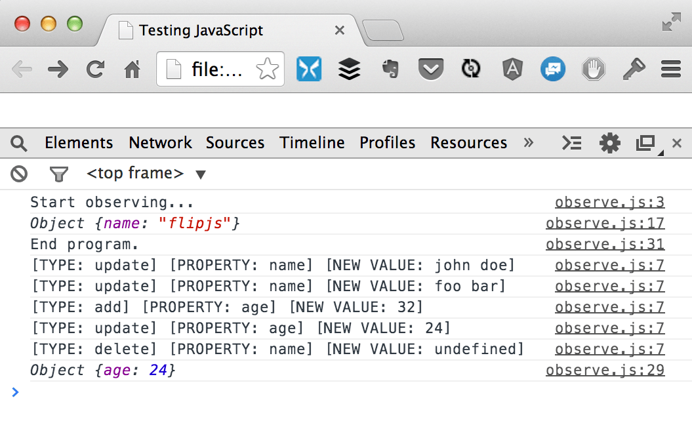

Playing with O.o()
There is a new kid on the block that’s going to change how you write data-binding in JavaScript. It is called Object.observe(). As Addy Osmani was saying, “A revolution is coming.”
Unfortunately, you cannot use it yet on most browsers, if not all. I tried Safari and Firefox, it didn’t work. Even node.js has not implemented it yet. But, you can already play with it using Google Chrome.
Here’s the code I was playing with:
|
|
Its pretty simple, actually. You just pass the object to watch, and a listener (callback), which will be called when a change has occured. In the listener, you iterate through each change, in my example, using forEach. You can check what changes has been made by inspecting the type property. It could be a property has been added, updated or deleted.
Here’s the result:

As you can see, the code block has finished already (‘End program text’), but the listener has stayed in memory, and async callback will be triggered when there is a change in the object being watched.
I’m only scratching the surface here. The code above does nothing, but that’s how you start when you want to listen to an object mutations. There are lots of things you can do with Object.observe(). There is also Object.unobserve() actually, which unregisters your listener. Go, and play with O.o(). :)
I need to go to sleep now. My head hurts so badly. I will touch more on this in future posts at some point.